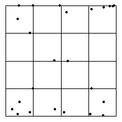

Data Analysis by Driven IFS
Exercise Answers
1. (c) Here is the Driven IFS.

In groups of three, the driven IFS points go toward
(0, 0),
then toward
(1, 0),
and then toward
(0, 1).
Then six points go toward
(1, 1).
Finally, in groups of three toward
(0, 1),
toward
(0, 1),
and toward
(0,0).
Return to
Exercises
.